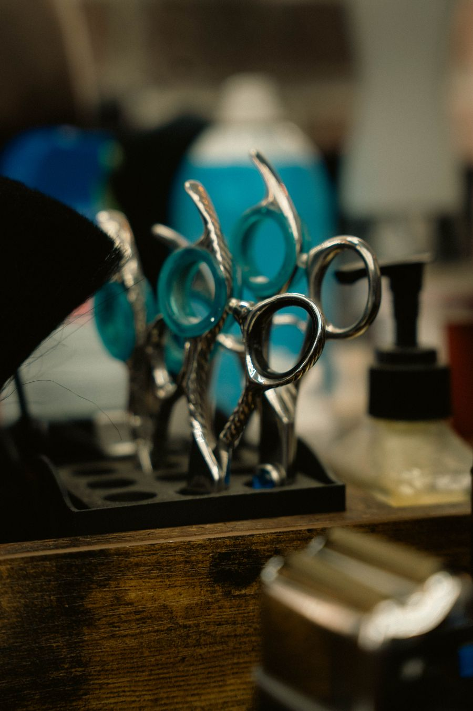
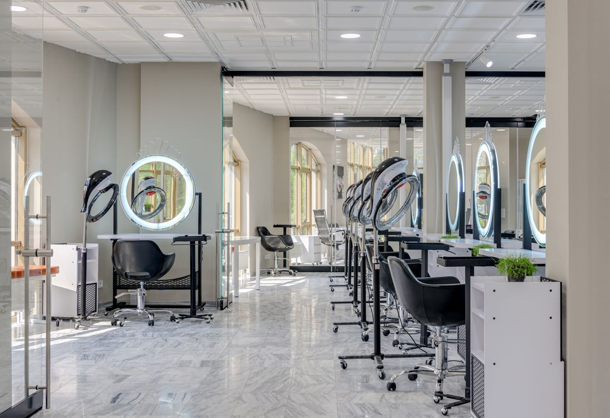

Corte
Consulta breve sobre formato e manutenção.
Uma pausa para escolher como cuidar dos fios, do corte à finalização. Veja os serviços e prepare uma conversa de agendamento no seu ritmo.
Conhecer os serviços
Antes de escolher um serviço, vale entender o que você deseja para o cabelo e para a rotina. Aqui a conversa inicial começa com duas escolhas simples: cuidado e turno preferido.
Valores fictícios para experimentar esta demonstração. Escolha um serviço para preparar a conversa.
Consulta breve sobre formato e manutenção.
Cuidado capilar em sessão.
Finalização para o dia a dia.
Preços de demonstração; não representam oferta ou disponibilidade real.

Esta página mostra uma forma simples de iniciar o contato. O ambiente fotografado é apenas uma referência visual.
Indique um serviço e um turno de preferência. Você poderá revisar a mensagem de exemplo antes de seguir. Isto não cria reserva nem mostra horários disponíveis.
Demonstração fictícia. Salão, preços e contato são exemplos; nenhum agendamento será recebido.
Sem JavaScript, consulte serviços e valores acima. O contato é apenas demonstrativo; nenhum agendamento pode ser solicitado neste site.
Escolha um serviço e um turno para ver sua mensagem de exemplo.
Preferência não é horário confirmado. O número de demonstração não recebe mensagens.